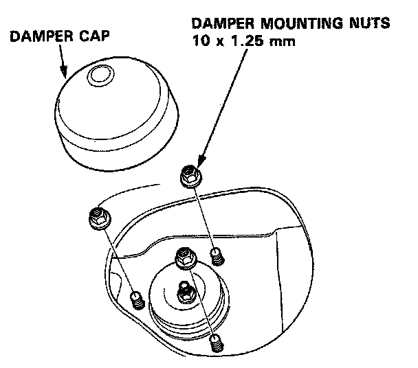
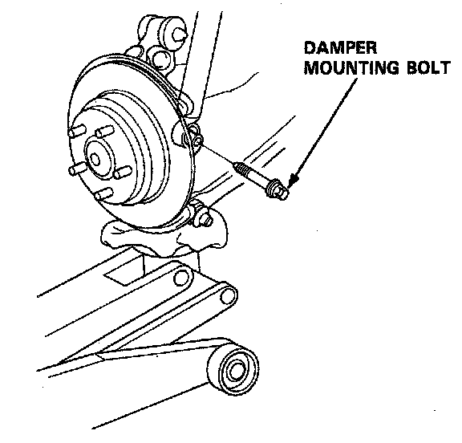

Removal
Rear Damper
Removal
1. Raise the rear of the car and support it with safety stands in the proper locations.
2. Remove the rear speaker and damper cap.
3. Use a floor jack to compress the damper slightly.

4. Remove the damper mounting nuts.
5. Remove the damper mounting bolt.

6. Lower the rear suspension and remove the damper assembly.
NOTE: Mark the right and left dampers or store them separately so they can be reinstalled on the proper sides.